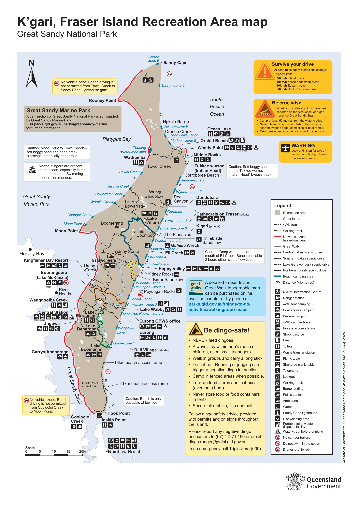

11 to 15 Nov 2026 · tides updated 10 Nov · works offline · tap a button to open or close
Live tide status works when this page is opened in Safari. If you can only see this line, use the buttons below.
Best = near low tide, in daylight. Worst = 2 hrs either side of high tide. First light about 4:50 am, sunset about 6:10 pm.
From Kingfisher Bay (west coast) tides. Walk the creek before driving it.
Launch on the rising tide, early morning. Be back in by the time shown. Worst = near low tide, when the sandbanks are a problem. Check the wind: wind against the tide makes the bay rough.
Clashes with the Saturday move: boating means crossing the creek in the afternoon (after 4:45 pm) and reaching the east coast around dark.
Times worked out from Kingfisher Bay (west coast) tides, not a published launch guide. Look at the creek mouth at low tide first so you know where the channel runs. Sunday is a travel day.
Fish moving water. Dawn on the rising tide is the best session each day; dusk around the evening low is the second.
Whiting, bream, flathead, dart, mullet, garfish, trevally, queenfish. Also mud crabs, rays, shovelnose sharks and turtles around.
| Fish | Size | Keep |
|---|---|---|
| Sand whiting | 23 cm min | 30 (all whiting) |
| Yellowfin bream | 25 cm min | 30 (all bream) |
| Dusky flathead | 40 to 75 cm | 5 |
| Dart | 30 cm min | 30 |
| Snapper | 35 cm min | 4 (1 over 70 cm) |
| Tailor | 35 cm min | 20 |
| Trevally (all) | None | 20 |
| Mud crab | 15 cm min | 7 each (14 per boat) |
Worked out from Kingfisher Bay (west coast) tides and first light about 4:50 am, sunset about 6:10 pm. Lock away bait and fish scraps; clean fish away from camp (dingoes).
Drive the west beach within 2 hrs of low tide, in daylight. Stay off 2 hrs either side of high tide. Sunset about 6:10 pm.
From Kingfisher Bay (west coast) tides. Not confirmed that the west beach runs all the way to Orchid Beach: check the QPWS map and conditions report. Go with another vehicle where you can.
Cross the creek near the early low tide, go inland (tides do not matter on the tracks), then drive the east beach in the afternoon window and be at camp before sunset.
If the inland run is short, fill the wait at a lake or stop off the beach. Camp must be booked with a QPWS camping permit. East beach times are from Eurong tides.
East beach. About 1 hr 15 min at low tide. Drive within 2 hrs of low tide, in daylight. Last barge off Hook Point about 5:15 pm.
Washouts south of Eurong are only passable at low tide. Beach run takes about 1 hr 15 min.
From Eurong tides (WillyWeather, Bureau of Meteorology data). Running late or rough beach: take the inland Bypass Road.

Map: Queensland Parks and Wildlife Service (QPWS), K'gari, Fraser Island Recreation Area map, Great Sandy National Park. © State of Queensland. Saved for offline use. Does not show your GPS location.